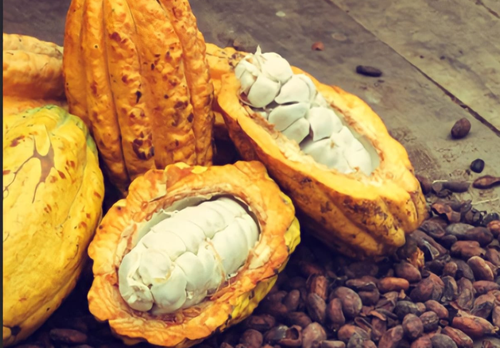

Jéssica Párraga
Ingeniera en Sistemas, experta en levantamiento y automatización de procesos, análisis de riesgo de mercado, y comercialización de productos agricolas
Exportadora Moises es una empresa familiar que se enfoca en la producción y venta de cacao y plátanos de alta calidad en el mercado global. A través de colaboraciones con agricultores y productores locales, la compañía adquiere materias primas que son procesadas y empaquetadas para ser enviadas al mercado internacional. La empresa está ubicada en la provincia de Manabí, Cantón el Carmen, una región reconocida por la calidad de sus productos de cacao y plátano. Con su compromiso en la producción de alimentos de alta calidad, Exportadora Moises se ha establecido como un referente en el mercado internacional de cacao y plátano.
"Somos una empresa exportadora comprometida con la calidad, sostenibilidad, innovación y respeto. Buscamos liderar la exportación agrícola y promover el desarrollo sostenible en nuestra región".
Ofrecer precios competitivos, relaciones duraderas con clientes y prácticas agrícolas sostenibles para incrementar la calidad y productividad de cultivos, contribuyendo al desarrollo sostenible y preservación del medio ambiente.
Ingeniera en Sistemas, experta en levantamiento y automatización de procesos, análisis de riesgo de mercado, y comercialización de productos agricolas
Experto en procesos y comercialización de cacao y banano
Cargo dslafkdajfkdskjfds